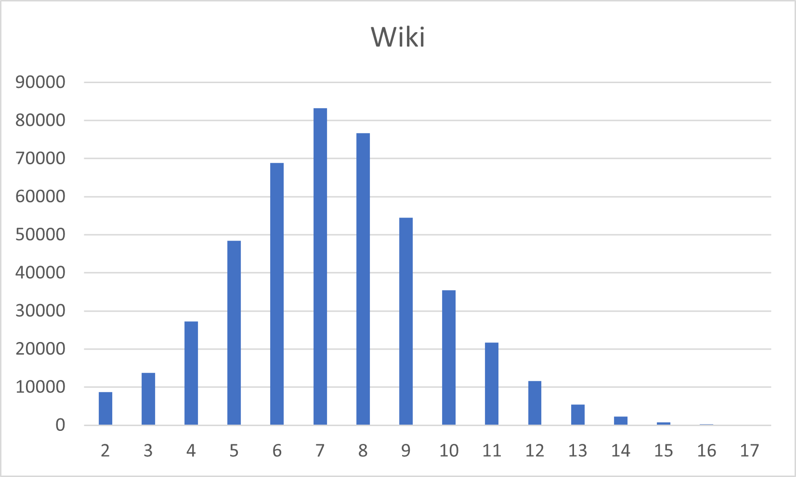

Algorithm 2: Tomita Maximal Cliques
NOTE: Click on each image to get the number of maximal cliques of each size.

| Metric | Value |
|---|---|
| Largest Clique Size | 17 |
| Total number of maximal cliques | 459002 |
| Execution time without Parallelization | 4346.8 sec ~ 1.2 hrs |

| Metric | Value |
|---|---|
| Largest Clique Size | 20 |
| Total number of maximal cliques | 226859 |
| Execution time without Parallelization | 11835.2 sec ~ 3.29 hrs |

| Metric | Value |
|---|---|
| Largest Clique Size | 67 |
| Total number of maximal cliques | 37322355 |
| Execution time without Parallelization | > 18 hrs |
Source Code (Non-Parallelized)
/*
usage :
Compilation : g++ -std=c++17 Chiba.cpp -o Chiba
Run : ./Chiba input.txt
*/
#include <iostream>
#include <fstream>
#include <vector>
#include <unordered_set>
#include <algorithm>
#include <chrono>
#include <map>
using namespace std;
class CliqueFinder {
public:
int count1000s = 0;
int n;
vector<unordered_set<int>> adjList;
vector<int> vertexOrder;
map<int, int> cliqueSizeCount;
int totalCliques = 0;
int maxCliqueSize = 0;
CliqueFinder(int n) : n(n) {
adjList.resize(n);
}
void addEdge(int u, int v) {
adjList[u].insert(v);
adjList[v].insert(u);
}
// Step 1: Sort vertices based on degree d(1) ≤ d(2) ≤ ... ≤ d(n)
void sortVerticesByDegree() {
vector<pair<int, int>> degreeList;
for (int i = 0; i < n; ++i) {
degreeList.emplace_back(adjList[i].size(), i);
}
sort(degreeList.begin(), degreeList.end(), [](const pair<int, int> &a, const pair<int, int> &b) {
return a.first > b.first;
});
vertexOrder.resize(n);
for (int i = 0; i < n; i++) {
vertexOrder[i] = degreeList[i].second;
}
}
// Step 4: Check maximality of clique
bool isMaximalClique(const unordered_set<int> &C) {
for (int v = 0; v < n; ++v) {
if (C.find(v) == C.end()) { // If v is not in the current clique
bool isAdjacentToAll = true;
for (int u : C) {
if (adjList[u].find(v) == adjList[u].end()) {
isAdjacentToAll = false;
break;
}
}
if (isAdjacentToAll) return false; // Not maximal if v connects to all in C
}
}
return true;
}
// Step 5: Lexicographical order test
bool lexicographicalTest(const unordered_set<int> &C, int v) {
if (C.empty()) return true;
vector<int> cliqueMembers(C.begin(), C.end());
sort(cliqueMembers.begin(), cliqueMembers.end());
// enforce lexicographic order
for (size_t i = 1; i < cliqueMembers.size(); i++) {
if (cliqueMembers[i] < cliqueMembers[i - 1]) {
return false;
}
}
// If v is smaller than the first element, it maintains lexicographic order
if (v < *cliqueMembers.begin()) {
return true;
}
return true;
}
void findCliques() {
sortVerticesByDegree();
unordered_set<int> C;
update(0, C);
}
void update(int i, unordered_set<int> &C) {
if (i == n) {
if (!C.empty() && isMaximalClique(C)) {
cliqueSizeCount[C.size()]++;
totalCliques++;
if(totalCliques > 1000 && totalCliques % 1000 == 1) {
count1000s++;
cout << count1000s << "000 cliques found" << endl;
}
maxCliqueSize = max(maxCliqueSize, (int)C.size());
}
return;
}
int v = vertexOrder[i];
bool isClique = true;
// Step 2 & 3: Compute T[y] and S[y]
for (int u : C) {
if (adjList[u].find(v) == adjList[u].end()) {
isClique = false;
break;
}
}
if (isClique) {
C.insert(v);
update(i + 1, C);
C.erase(v);
}
// Step 6
update(i + 1, C);
}
void printResults() {
cout << "Number of maximal cliques of each size:" << endl;
for (auto &[size, count] : cliqueSizeCount) {
cout << "Size " << size << ": " << count << endl;
}
cout << "Total number of maximal cliques: " << totalCliques << endl;
cout << "Size of the largest maximal clique: " << maxCliqueSize << endl;
}
};
int main(int argc, char *argv[]) {
if (argc < 2) {
cerr << "Usage: " << argv[0] << " <input_file>" << endl;
return 1;
}
ifstream inputFile(argv[1]);
if (!inputFile.is_open()) {
cerr << "Error: Unable to open input file!" << endl;
return 1;
}
int n, m;
inputFile >> n >> m;
CliqueFinder finder(n);
int u, v;
for (int i = 0; i < m; i++) {
inputFile >> u >> v;
finder.addEdge(u, v);
}
inputFile.close();
auto start = chrono::high_resolution_clock::now();
finder.findCliques();
auto end = chrono::high_resolution_clock::now();
chrono::duration<double> elapsed = end - start;
finder.printResults();
cout << "Running time: " << elapsed.count() << " seconds" << endl;
return 0;
}
Execution Times